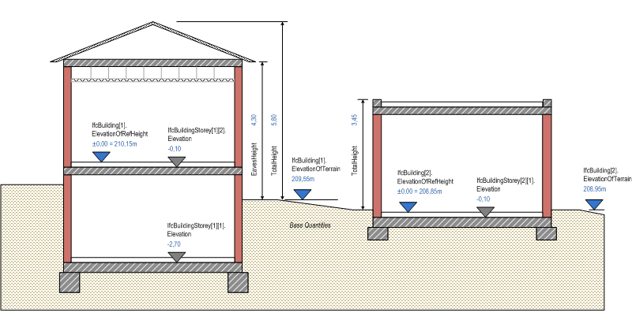

Natural language names
 | Gebäude |
 | Building |
 | Bâtiment |
| Gebäude |
| Building |
| Bâtiment |
| Item | SPF | XML | Change | Description | IFC2x3 to IFC4 |
|---|---|---|---|---|
| IfcBuilding | ||||
| OwnerHistory | MODIFIED | Instantiation changed to OPTIONAL. | ||
| CompositionType | MODIFIED | Instantiation changed to OPTIONAL. |
A building represents a structure that provides shelter for its occupants or contents and stands in one place. The building is also used to provide a basic element within the spatial structure hierarchy for the components of a building project (together with site, storey, and space).
NOTE Definition from ISO 6707-1:
Construction work that has the provision of shelter for its occupants or contents as one of its main purpose and is normally designed to stand permanently in one place.
A building is (if specified) associated to a site. A building may span over several connected or disconnected buildings. Therefore building complex provides for a collection of buildings included in a site. A building can also be decomposed in (vertical) parts, where each part defines a building section. This is defined by the composition type attribute of the supertype IfcSpatialStructureElements which is interpreted as follow:
The IfcBuilding is used to build the spatial structure of a building (that serves as the primary project breakdown and is required to be hierarchical). The spatial structure elements are linked together by using the objectified relationship IfcRelAggregates. Figure 136 shows the IfcBuilding as part of the spatial structure. It also serves as the spatial container for building and other elements.
NOTE Detailed requirements on mandatory element containment and placement structure relationships are given in view definitions and implementer agreements.

|
|
Figure 136 — Building composition |
Systems, such as building service or electrical distribution systems, zonal systems, or structural analysis systems, relate to IfcBuilding by using the objectified relationship IfcRelServicesBuildings.
Figure 137 describes the heights and elevations of the IfcBuilding. It is used to provide the height above sea level of the project height datum for this building, that is, the internal height 0.00. The height 0.00 is often used as a building internal reference height and equal to the floor finish level of the ground floor.
|
 |
|
Figure 137 — Building elevations |
HISTORY New entity in IFC1.0.
| # | Attribute | Type | Cardinality | Description | C |
|---|---|---|---|---|---|
| 10 | ElevationOfRefHeight | IfcLengthMeasure | [0:1] | Elevation above sea level of the reference height used for all storey elevation measures, equals to height 0.0. It is usually the ground floor level. | X |
| 11 | ElevationOfTerrain | IfcLengthMeasure | [0:1] | Elevation above the minimal terrain level around the foot print of the building, given in elevation above sea level. | X |
| 12 | BuildingAddress | IfcPostalAddress | [0:1] | Address given to the building for postal purposes. | X |

| # | Attribute | Type | Cardinality | Description | C |
|---|---|---|---|---|---|
| IfcRoot | |||||
| 1 | GlobalId | IfcGloballyUniqueId | [1:1] | Assignment of a globally unique identifier within the entire software world. | X |
| 2 | OwnerHistory | IfcOwnerHistory | [0:1] |
Assignment of the information about the current ownership of that object, including owning actor, application, local identification and information captured about the recent changes of the object,
NOTE only the last modification in stored - either as addition, deletion or modification. | X |
| 3 | Name | IfcLabel | [0:1] | Optional name for use by the participating software systems or users. For some subtypes of IfcRoot the insertion of the Name attribute may be required. This would be enforced by a where rule. | X |
| 4 | Description | IfcText | [0:1] | Optional description, provided for exchanging informative comments. | X |
| IfcObjectDefinition | |||||
| HasAssignments | IfcRelAssigns @RelatedObjects | S[0:?] | Reference to the relationship objects, that assign (by an association relationship) other subtypes of IfcObject to this object instance. Examples are the association to products, processes, controls, resources or groups. | X | |
| Nests | IfcRelNests @RelatedObjects | S[0:1] | References to the decomposition relationship being a nesting. It determines that this object definition is a part within an ordered whole/part decomposition relationship. An object occurrence or type can only be part of a single decomposition (to allow hierarchical strutures only). | X | |
| IsNestedBy | IfcRelNests @RelatingObject | S[0:?] | References to the decomposition relationship being a nesting. It determines that this object definition is the whole within an ordered whole/part decomposition relationship. An object or object type can be nested by several other objects (occurrences or types). | X | |
| HasContext | IfcRelDeclares @RelatedDefinitions | S[0:1] | References to the context providing context information such as project unit or representation context. It should only be asserted for the uppermost non-spatial object. | X | |
| IsDecomposedBy | IfcRelAggregates @RelatingObject | S[0:?] | References to the decomposition relationship being an aggregation. It determines that this object definition is whole within an unordered whole/part decomposition relationship. An object definitions can be aggregated by several other objects (occurrences or parts). | X | |
| Decomposes | IfcRelAggregates @RelatedObjects | S[0:1] | References to the decomposition relationship being an aggregation. It determines that this object definition is a part within an unordered whole/part decomposition relationship. An object definitions can only be part of a single decomposition (to allow hierarchical strutures only). | X | |
| HasAssociations | IfcRelAssociates @RelatedObjects | S[0:?] | Reference to the relationship objects, that associates external references or other resource definitions to the object.. Examples are the association to library, documentation or classification. | X | |
| IfcObject | |||||
| 5 | ObjectType | IfcLabel | [0:1] |
The type denotes a particular type that indicates the object further. The use has to be established at the level of instantiable subtypes. In particular it holds the user defined type, if the enumeration of the attribute PredefinedType is set to USERDEFINED.
| X |
| IsDeclaredBy | IfcRelDefinesByObject @RelatedObjects | S[0:1] | Link to the relationship object pointing to the declaring object that provides the object definitions for this object occurrence. The declaring object has to be part of an object type decomposition. The associated IfcObject, or its subtypes, contains the specific information (as part of a type, or style, definition), that is common to all reflected instances of the declaring IfcObject, or its subtypes. | X | |
| Declares | IfcRelDefinesByObject @RelatingObject | S[0:?] | Link to the relationship object pointing to the reflected object(s) that receives the object definitions. The reflected object has to be part of an object occurrence decomposition. The associated IfcObject, or its subtypes, provides the specific information (as part of a type, or style, definition), that is common to all reflected instances of the declaring IfcObject, or its subtypes. | X | |
| IsTypedBy | IfcRelDefinesByType @RelatedObjects | S[0:1] | Set of relationships to the object type that provides the type definitions for this object occurrence. The then associated IfcTypeObject, or its subtypes, contains the specific information (or type, or style), that is common to all instances of IfcObject, or its subtypes, referring to the same type. | X | |
| IsDefinedBy | IfcRelDefinesByProperties @RelatedObjects | S[0:?] | Set of relationships to property set definitions attached to this object. Those statically or dynamically defined properties contain alphanumeric information content that further defines the object. | X | |
| IfcProduct | |||||
| 6 | ObjectPlacement | IfcObjectPlacement | [0:1] | Placement of the product in space, the placement can either be absolute (relative to the world coordinate system), relative (relative to the object placement of another product), or constraint (e.g. relative to grid axes). It is determined by the various subtypes of IfcObjectPlacement, which includes the axis placement information to determine the transformation for the object coordinate system. | X |
| 7 | Representation | IfcProductRepresentation | [0:1] | Reference to the representations of the product, being either a representation (IfcProductRepresentation) or as a special case a shape representations (IfcProductDefinitionShape). The product definition shape provides for multiple geometric representations of the shape property of the object within the same object coordinate system, defined by the object placement. | X |
| ReferencedBy | IfcRelAssignsToProduct @RelatingProduct | S[0:?] | Reference to the IfcRelAssignsToProduct relationship, by which other products, processes, controls, resources or actors (as subtypes of IfcObjectDefinition) can be related to this product. | X | |
| IfcSpatialElement | |||||
| 8 | LongName | IfcLabel | [0:1] |
Long name for a spatial structure element, used for informal purposes. It should be used, if available, in conjunction with the inherited Name attribute.
NOTE In many scenarios the Name attribute refers to the short name or number of a spacial element, and the LongName refers to the full descriptive name. | X |
| ContainsElements | IfcRelContainedInSpatialStructure @RelatingStructure | S[0:?] | Set of spatial containment relationships, that holds those elements, which are contained within this element of the project spatial structure.
NOTE The spatial containment relationship, established by IfcRelContainedInSpatialStructure, is required to be an hierarchical relationship, where each element can only be assigned to 0 or 1 spatial structure element. | X | |
| ServicedBySystems | IfcRelServicesBuildings @RelatedBuildings | S[0:?] | Set of relationships to systems, that provides a certain service to the spatial element for which it is defined. The relationship is handled by the objectified relationship IfcRelServicesBuildings. | X | |
| ReferencesElements | IfcRelReferencedInSpatialStructure @RelatingStructure | S[0:?] | Set of spatial reference relationships, that holds those elements, which are referenced, but not contained, within this element of the project spatial structure.
NOTE The spatial reference relationship, established by IfcRelReferencedInSpatialStructure, is not required to be an hierarchical relationship, i.e. each element can be assigned to 0, 1 or many spatial structure elements. EXAMPLE A curtain wall maybe contained in the ground floor, but maybe referenced in all floors, it reaches. Ø\X | X | |
| IfcSpatialStructureElement | |||||
| 9 | CompositionType | IfcElementCompositionEnum | [0:1] | Denotes, whether the predefined spatial structure element represents itself, or an aggregate (complex) or a part (part). The interpretation is given separately for each subtype of spatial structure element. If no CompositionType is asserted, the dafault value 'ELEMENT' applies. | X |
| IfcBuilding | |||||
| 10 | ElevationOfRefHeight | IfcLengthMeasure | [0:1] | Elevation above sea level of the reference height used for all storey elevation measures, equals to height 0.0. It is usually the ground floor level. | X |
| 11 | ElevationOfTerrain | IfcLengthMeasure | [0:1] | Elevation above the minimal terrain level around the foot print of the building, given in elevation above sea level. | X |
| 12 | BuildingAddress | IfcPostalAddress | [0:1] | Address given to the building for postal purposes. | X |
Spatial Composition
The Spatial Composition concept applies to this entity as shown in Table 23.
| ||||||||
Table 23 — IfcBuilding Spatial Composition |
NOTE By using the inverse relationship IfcBuilding.Decomposes it references IfcProject || IfcSite || IfcBuilding through IfcRelAggregates.RelatingObject. If it refers to another instance of IfcBuilding, the referenced IfcBuilding needs to have a different and higher CompositionType, i.e. COMPLEX (if the other IfcBuilding has ELEMENT), or ELEMENT (if the other IfcBuilding has PARTIAL).
Spatial Decomposition
The Spatial Decomposition concept applies to this entity as shown in Table 24.
| ||||||
Table 24 — IfcBuilding Spatial Decomposition |
NOTE By using the inverse relationship IfcBuilding.IsDecomposedBy it references IfcBuilding || IfcBuildingStorey through IfcRelAggregates.RelatedObjects. If it refers to another instance of IfcBuilding, the referenced IfcBuilding needs to have a different and lower CompositionType, i.e. ELEMENT (if the other IfcBuilding has COMPLEX), or PARTIAL (if the other IfcBuilding has ELEMENT).
Spatial Container
The Spatial Container concept applies to this entity as shown in Table 25.
| ||||
Table 25 — IfcBuilding Spatial Container |
NOTE If there are building elements and/or other elements directly related to the IfcBuilding (like a curtain wall spanning several stories), they are associated with the IfcBuilding by using the objectified relationship IfcRelContainedInSpatialStructure. The IfcBuilding references them by its inverse relationship:
- IfcBuilding.ContainsElements -- referencing any subtype of IfcProduct (with the exception of other spatial structure element) by IfcRelContainedInSpatialStructure.RelatedElements.
Property Sets for Objects
The Property Sets for Objects concept applies to this entity as shown in Table 26.
| |||||||||||||||||||||||||||||||||||||||||||||||||||||||||||||||||||||||||||||||||||||||||||||||||||||||||||||||||||||||||||||||||||||||||||||||||||||||||||||||||||||||||||||||
Table 26 — IfcBuilding Property Sets for Objects |
Quantity Sets
The Quantity Sets concept applies to this entity as shown in Table 27.
| ||
Table 27 — IfcBuilding Quantity Sets |
Product Local Placement
The Product Local Placement concept applies to this entity.
The local placement for IfcBuilding is defined in its supertype IfcProduct. It is defined by the IfcLocalPlacement, which defines the local coordinate system that is referenced by all geometric representations.
FootPrint GeomSet Geometry
The FootPrint GeomSet Geometry concept applies to this entity as shown in Table 28.
| ||||||||
Table 28 — IfcBuilding FootPrint GeomSet Geometry |
The foot print representation of IfcBuilding is given by either a single 2D curve (such as IfcPolyline or IfcCompositeCurve), or by a list of 2D curves (in case of inner boundaries), if the building has an independent geometric representation.
NOTE The independent geometric representation of IfcBuilding may not be allowed in certain model view definitions. In those cases only the contained elements and spaces have an independent geometric representation.
Body Geometry
The Body Geometry concept applies to this entity.
The body (or solid model) geometric representation (if the building has an independent geometric representation) of IfcBuilding is defined using faceted B-Rep capabilities (with or without voids), based on the IfcFacetedBrep or on the IfcFacetedBrepWithVoids.
NOTE Since the building shape is usually described by the exterior building elements, an independent shape representation shall only be given, if the building is exposed independently from its constituting elements and such independent geometric representation may be prohibited in model view definitions.
| # | Concept | Model View |
|---|---|---|
| IfcRoot | ||
| Software Identity | Common Use Definitions | |
| Revision Control | Common Use Definitions | |
| IfcObject | ||
| Object Occurrence Predefined Type | Common Use Definitions | |
| IfcSpatialElement | ||
| IfcSpatialStructureElement | ||
| IfcBuilding | ||
| Spatial Composition | Common Use Definitions | |
| Spatial Decomposition | Common Use Definitions | |
| Spatial Container | Common Use Definitions | |
| Property Sets for Objects | Common Use Definitions | |
| Quantity Sets | Common Use Definitions | |
| Product Local Placement | Common Use Definitions | |
| FootPrint GeomSet Geometry | Common Use Definitions | |
| Body Geometry | Common Use Definitions | |
<xs:element name="IfcBuilding" type="ifc:IfcBuilding" substitutionGroup="ifc:IfcSpatialStructureElement" nillable="true"/>
<xs:complexType name="IfcBuilding">
<xs:complexContent>
<xs:extension base="ifc:IfcSpatialStructureElement">
<xs:sequence>
<xs:element name="BuildingAddress" type="ifc:IfcPostalAddress" nillable="true" minOccurs="0"/>
</xs:sequence>
<xs:attribute name="ElevationOfRefHeight" type="ifc:IfcLengthMeasure" use="optional"/>
<xs:attribute name="ElevationOfTerrain" type="ifc:IfcLengthMeasure" use="optional"/>
</xs:extension>
</xs:complexContent>
</xs:complexType>
ENTITY IfcBuilding
SUBTYPE OF (IfcSpatialStructureElement);
ElevationOfRefHeight : OPTIONAL IfcLengthMeasure;
ElevationOfTerrain : OPTIONAL IfcLengthMeasure;
BuildingAddress : OPTIONAL IfcPostalAddress;
END_ENTITY;
 Instance diagram
Instance diagram Link to this page
Link to this page